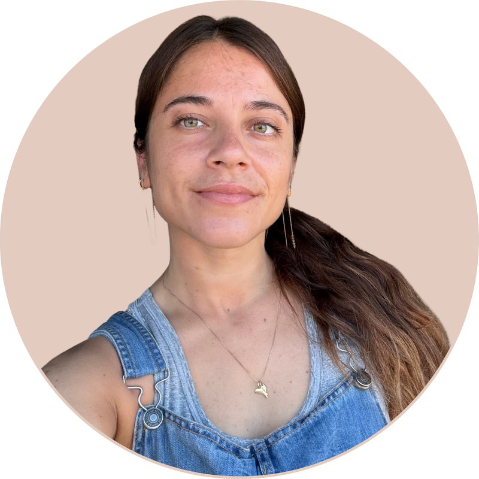

Hi! I'm a PhD candidate in the Visualization and Graphics group at Utrecht University. My interests span data science and data visualization: I enjoy both analysing data and finding ways to make it easier to explore and understand. My research brings these interests together through visual analytics, with applications ranging from understanding AI models to exploring human behaviour in virtual reality.
Within the VR4eVR project, which uses virtual reality to support the rehabilitation of hemianopia (a partial blindness that often follows a stroke) and is funded by NWO, I develop visual analytics systems to explore data from patients' training programs, such as eye-tracking metrics, task performance, and training progression. These tools help occupational therapists and clinicians monitor recovery and optimize rehabilitation strategies. I'm also part of the SMARTneurolab team.
Before my PhD, I studied Statistics at the University of Padova and worked as a Data Scientist in the financial sector, first at the European Central Bank (Frankfurt, Germany) and later at Prometeia (Milan, Italy). More in my cv.
I also teach: I'm a teaching assistant for Visual Analytics for Big Data at Utrecht University and co-teach data visualization at the University of Padova. I'm involved in the data science community as a volunteer at PyData Amsterdam.